Top 10
Princeton University
#1 in the U.S. for Math.
Located in Princeton, New Jersey, Princeton offers a royal experience for student life and academics!
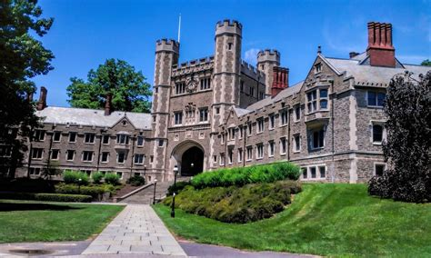
Princeton University Wallpapers - Top Free Princeton University Backgrounds - Wallpaperaccess, wallpaperaccess.com/princeton-university.
Princeton Graduate AdmissionsHarvard University
#2 in the U.S. for Math.
Located in Cambridge, Massachusetts, Harvard is one of the most notable schools in the United States!
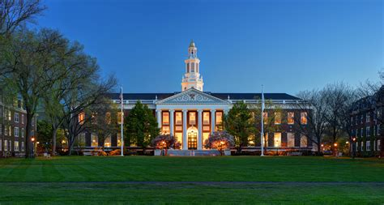
“Harvard University Wallpapers (20 Images).” WallpaperCat, wallpapercat.com/harvard-university-wallpapers.
Harvard Graduate AdmissionsMassachusetts Institute of Technology
#2 in the U.S. for Math.
Located in Cambridge, Massachusetts, MIT has a nationally recognized level of excellence for science programs!
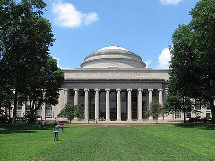
“Massachusetts Institute of Technology.” Wikipedia, Wikimedia Foundation, 18 Oct. 2026, en.wikipedia.org /wiki/Wikipedia:GLAM/Massachusetts _Institute_of_Technology.
MIT Graduate AdmissionsStanford University
#2 in the U.S. for Math.
Stanford is located in the city of Palo Alto. It offers stunning views, stellar education, and opportunities of a lifetime!
“Stanford University Wallpapers - Wallpaper Cave.” WallpaperCave, wallpapercave.com/stanford-university-wallpapers.
Stanford Graduate AdmissionsUniversity of California - Berkeley
#2 in the U.S. for Math.
UC Berkeley is known for its beautiful location in Berkeley, California, and it is also known for its high graduate success rate!
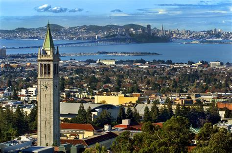
Kelly, John. “John Kelly, Attorney.” 2022, 1 Jan. 1970, blog.law-kelly.com/2022/.
UC Berkeley Graduate AdmissionsUniversity of California - Los Angeles
#6 in the U.S. for Math.
Located in Los Angeles, California, UCLA is an artsy but intellectual school!
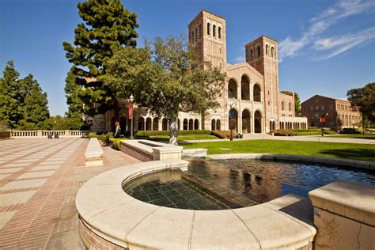
Best Colleges for Psychology Majors, www.thoughtco.com/best-colleges-for-psychology-majors-4843830.
UCLA Graduate AdmissionsUniversity of Chicago
#6 in the U.S. for Math.
Located in downtown Chicago, University of Chicago offers a savvy and supreme education!
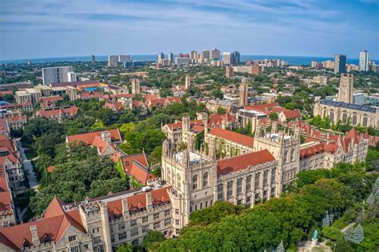
Smentkowski, Elena. “Illinois Licenses Are Set for Some Big Changes in 2025-Here’s What to Know.” Secret Chicago, 26 Feb. 2025, secretchicago.com/illinois-id-laws-2025/.
University of Chicago Graduate AdmissionsCalifornia Institute of Technology
#8 in the U.S. for Math.
Located in Pasadena, California, CalTech has a beautiful campus and lots of opportunities and organizations!
“Caltech Wallpapers.” Wallpapers.Com, wallpapers.com/caltech.
CalTech Graduate AdmissionsColumbia University
#9 in the U.S. for Math.
Located in New York City, Columbia offers fresh, educational, and inspiring programs and organizations!
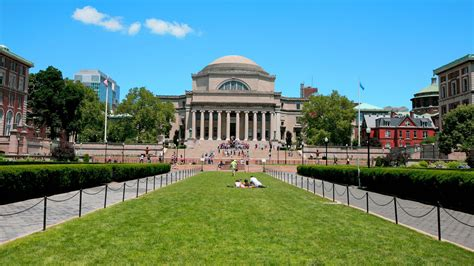
“Columbia University Wallpapers.” Wallpapers.Com, wallpapers.com/columbia-university.
Columbia Graduate AdmissionsNew York University
#10 in the U.S. for Math.
Located in New York City, NYU has a multitude of opportunities and programs to explore!
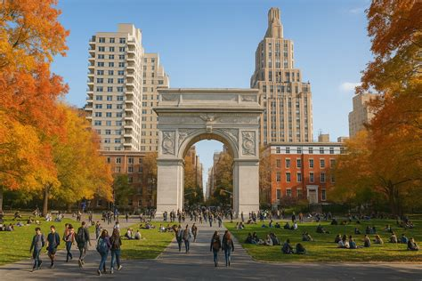
SchoolScoops. “NYU Tours: Private Campus Tours with NYU Students.” SchoolScoops, www.schoolscoops.com/p/new-york-university.
NYU Graduate AdmissionsLocal 10
University of Chicago
#6 in the U.S. for Math.
Located in downtown Chicago, University of Chicago offers a savvy and supreme education!
Smentkowski, Elena. “Illinois Licenses Are Set for Some Big Changes in 2025-Here’s What to Know.” Secret Chicago, 26 Feb. 2025, secretchicago.com/illinois-id-laws-2025/.
University of Chicago Graduate AdmissionsUniversity of Michigan - Ann Arbor
#10 in the U.S. for Math.
UM-Ann Arbor is a beautiful and historic college filled with bright and inquisitive students!
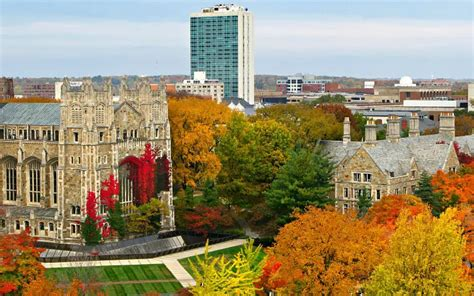
www.collegetuitioncompare.com/edu/ 170976/university-of-michigan-ann-arbor/.
UM-Ann Arbor Graduate AdmissionsUniversity of Wisconsin - Madison
#16 in the U.S. for Math.
UW-Madison is part of the big 10 schools in America, and it offers a fun and enriching experience!
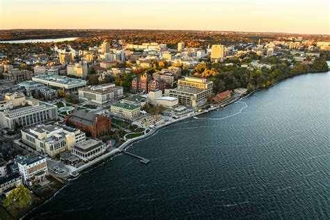
“University of Wisconsin–Madison Named an Innovation and Economic Prosperity University.” News, 15 Oct. 2025, news.wisc.edu/ university-of-wisconsin-madison-named-an-innovation-and-economic-prosperity-university/.
UW-Madison Graduate AdmissionsUniversity of Minnesota - Twin Cities
#16 in the U.S. for Math.
UM-Twin Cities is a local, educational, and uplifting college located in Twin Cities, Minnesota.
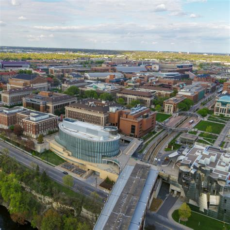
“Visit the University of Minnesota Twin Cities.” Visit Us | University of Minnesota Twin Cities, admissions.tc.umn.edu/visit/visit-university-minnesota-twin-cities.
UM-Twin Cities Graduate AdmissionsNorthwestern University
#21 in the U.S. for Math.
Located in Chicago, Illinois, Northwestern offers an urban, thrilling, and social graduate experience!
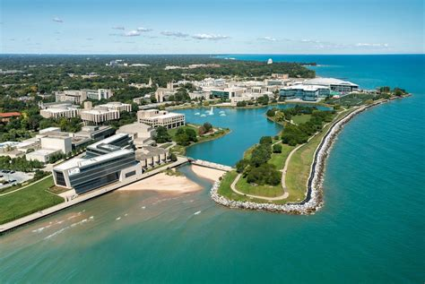
University Reviews Policies after Off-Campus Shooting - Northwestern Now, news.northwestern.edu/stories/2023/ 04/university-reviews-policies-after-off-campus-shooting.
Northwestern Graduate AdmissionsUniversity of Illinois - Urbana Champaign
#21 in the U.S. for Math.
University of Illinois - Urbana Champaign is a top ranking school local to the midwest!
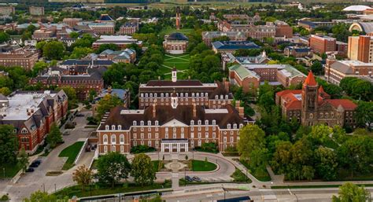
Castillo, Juan José Mendoza. “History of Programs at University of Illinois - Urbana Champaign.” Blog, 28 Mar. 2025, sabordavida.pt/ qual-e-a-historia-e-os-principais-programas-da-u-of-illinois-at-urbana-champaign/.
University of Illinois - Urbana Champaign Graduate AdmissionsUniversity of Illinois - Chicago
#46 in the U.S. for Math.
Located in the heart of Chicago, Illinois, UIC combines city living with college life!
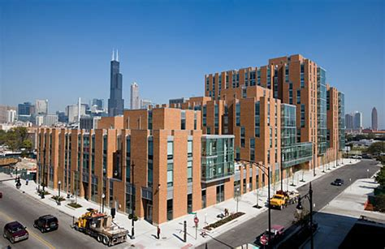
“University of Illinois at Chicago (UIC) Department of Communication.” Communication Studies, 12 Sept. 2012, www.communicationstudies.com/ communication-colleges/ university-of-illinois-at-chicago-uic-department-of-communication.
UIC Graduate AdmissionsMichigan State University
#46 in the U.S. for Math.
Michigan State is located in East Lansing, Michigan, and it offers a spirited and academic-centered lifestyle!
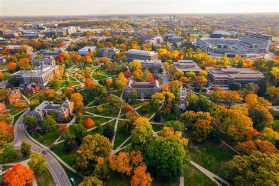
“Michigan State University: Lansing, MI.” Choose Lansing, www.lansing.org/michigan-state-university/.
Michigan State Graduate AdmissionsWayne State University
#117 in the U.S. for Math.
Wayne State is located in Detroit, Michigan, and it has countless opportunities and organizations to pursue!
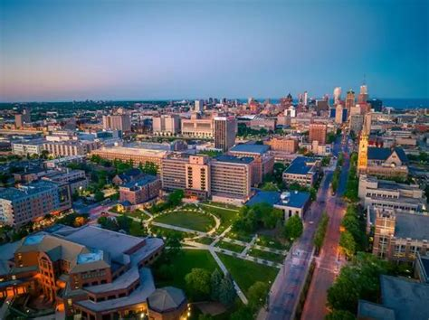
“Wayne State University, Old Main Building with Historic Landmark...” Getty Images, www.gettyimages.com.au/detail/photo/ wayne-state-university-old-main-building-with-royalty-free-image/128253191.
Wayne State Graduate AdmissionsUniversity of Wisconsin - Milwaukee
#125 in the U.S. for Math.
UW-Milwaukee offers a beautiful campus nestled in an urban environment!
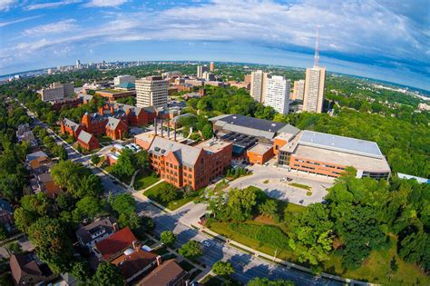
Facebook, www.facebook.com/uwmstugov/.
UW-Milwaukee Graduate Admissions